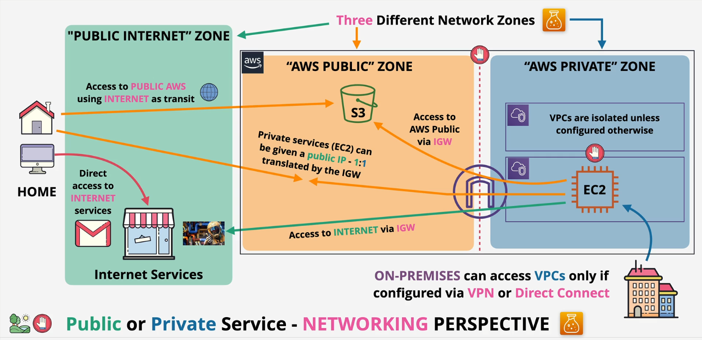
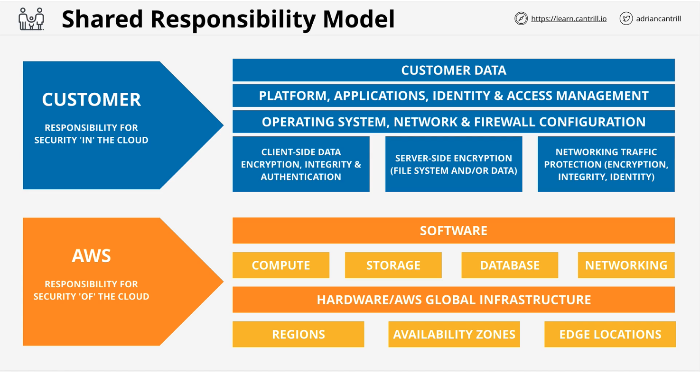

AWS Fundamentals
Public vs private
- AWS has three network zones
- Public internet zone
- used as transit to get to AWS public zone
- Public zone
- S3
- Private zone
- Private resources are within a VPC (virtual private cloud)
- cannot communicate with other VPCs unless allowed
- cannot access internet or be accessed by internet unless allowed
- Private IP ranges
- access public internet and public zone via internet gateway (IGW)
- Private resources are within a VPC (virtual private cloud)
- Public internet zone

Global infrastructure
- Most services are regional, some are global
- Service resilience
- Globally resilient: data is replicated across multiple regions, cannot choose a region
- e.g. IAM, cloudfront, Route 53
- Region resilient: separate services in each region. Generally replicate to multiple AZs
- AZ resilient: if AZ fails (fire/power/hardware/etc), that service will fail
- Globally resilient: data is replicated across multiple regions, cannot choose a region
AWS regions
- Regions are geographically spread and based on customer requirements
- Isolated fault domain for disaster recovery/failover
- Geopolitical separation - different governance for things like data movement
- Location control for performance
- Region code (us-east-1) vs region name (North Virginia)
Availability zones
- every region has at least two AZs. Currently up to six
- Can create resiliency/high availability in case fire/power/hardware/etc impacts one AZ
AWS edge locations
- More edge locations than regions
- Local distribution points for fast/efficient data transfer
VPCs
- within 1 account and 1 region
- Two VPC types: default and custom
- only 1 default VPC per region
- Created by default by AWS, less flexible
- many custom VPCs per region
- only 1 default VPC per region
Default VPC
- cannot cross boundary of VPC until configured otherwise
- only gets one CIDR range and it is always 172.31.0.0/16
- only one per region - can be removed and recreated
- pre-configured to have one /20 subnet in each AZ
- has a IGW, security group (SG) and NACL
- By default, anything created within default VPC has a public IPv4 address
Elastic compute cloud (EC2) basics
- IaaS - provides virtual machines (instances)
- private service by default using a single VPC
- AZ resilient (fails if AZ fails)
- different instance sizes/capabilities
- on-demand billing - per-second
- local on-host storage or Elastic Block Store (EBS)
Lifecycle
- Running <-> Stopped
- Terminated (non-reversible)
- When running, charged for: CPU, memory, storage, and networking
- When stopped, charged for: storage
- When terminated, not charged
AMI (Amazon Machine Image)
- permissions
- public - everyone allowed to use (like default Linux/Windows AMIs)
- owner - implicit allow
- explicit - specific AWS accounts
- boot volume
- data volumes
- block device volume
Connecting to EC2
- Windows: Port 3389 (RDP)
- Linux: Port 22 (SSH)
S3
- global object storage platform, but regional based/resilient
- replicated across AZs
- can be replicated across regions
- public service, unlimited data, multi-user
- great for large amounts of data
S3 objects
- most of the time, an object is a file
- objects have:
- 📝 key (i.e. filename)
- 📝 value (i.e. content being stored)
- 📝 size: can be 0 bytes to 5TB
- version id
- metadata
- access control
- sub-resources
S3 buckets
- data inside a bucket has a primary region
- data doesn't leave a region unless configured to (data sovereignty)
- 📝 bucket name must be globally unique
- between 3-63 characters, lowercase, no underscores
- start with lowercase letter or number
- can't be IP formatted
- 📝 can hold unlimited number of objects
- flat structure, not like a filesystem with folders
- object key prefixes make it seem otherwise
- 📝 100 buckets per account soft limit, 1000 per account hard limit
Patterns and anti-patterns
- S3 is an object store, not file (like windows) or block (like mount/volume on linux)
- great for data 'offload'
- input and/or output to many aws services
CloudFormation
- Can be YAML or JSON
- All templates must have at least one resource.
Resourcesis only mandatory field in a template - 📝
Descriptionmust immediately followAWSTemplateFormatVersionifAWSTemplateFormatVersionis included (AWSTemplateFormatVersionis an optional field) Mappings: can create lookup tables, e.g. custom settings for different environmentsConditions: define boolean expressions that can be associated with resources to determine when to create the resourceResource->Instance: Logical resource,Typedetermines type of instance- Stack: implementation of a CloudFormation template
- each logical resource is used to create a physical resource
CloudWatch
- collects and manages operational data
Three main products:
- Metrics: monitoring of metrics and events based on metrics - from AWS, other cloud platforms, on-prem, etc
- Cloudwatch logs: from AWS products, apps, on-premises
- Cloudwatch events: from AWS services and schedules
Basics
- Namespace: container for data
- AWS namespaces look like AWS/{service}
- Datapoint: timestamp and value
- Dimension: name:value pairs for different things or perspectives within the same metric
- Alarm
- associated with a metric
- Has bounds that determine when to be in OK or ALARM state
- Can take an action when in alarm state
Shared Responsibility Model
- Customer is responsible for security "in" the cloud
- AWS is responsible for security "of" the cloud

High-availability, fault-tolerance, disaster recovery
High-availability
- ensure agreed upon performance, usually uptime, for a higher than normal period
- 99.9% (three 9's) = 8.77 hrs/yr downtime
- 99.999% (five 9's) = 5.26 mins/yr downtime
- 📝 minimize any outages
Fault-tolerance
- property that enables system to continue operating during one or more faults/failures in some components
- 📝 operate through faults
Disaster recovery
- policies, tools, procedures to enable recovery or continuation of vital infrastructure following natural/human-induced disaster
- 📝 used when HA and FT don't work
Route53
- register domains through all major registries
- creates and manages nameservers
-
hosted zones: zone files in AWS, hosted on four managed name servers
- can be public or private (linked to VPCs)
- Nameserver (NS): delegation of DNS
- A and AAAA: host to IPv4 or IPv6, respectively
- CNAME: host to host
- reduces admin overhead. e.g. designate www, email, and ftp subdomains to A record so if IPv4 changes, only A record has to be updated
- MX: email record
- email server looks at domain of TO address and queries MX record
- lowest value has highest priority, iterates over records until successful
- TXT: prove ownership of domain
- TTL: cache records for specified number of seconds
- lengthy process to get result from authoritative source (nameserver)